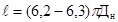

МИНИСТЕРСТВО
МОНТАЖНЫХ И СПЕЦИАЛЬНЫХ
СТРОИТЕЛЬНЫХ РАБОТ СССР
УТВЕРЖДАЮ
Заместитель министра
монтажных и специальных
строительных работ СССР
К.К. Липодат
«6» марта 1985 г.
ИНСТРУКЦИЯ
ПО СКЛЕИВАНИЮ СТЫКОВ СТАЛЬНЫХ ТРУБОПРОВОДОВ
ВСН 461-85
Минмонтажспецстрой СССР
Москва 1980
Центральное бюро научно-технической информации
Москва - 1986
Инструкция содержит требования к технологии склеивания стыков стальных трубопроводов различного назначения до Ду 100 мм, работающих при избыточном давлении до 1 МПа, рабочей температуре от минус 60 до 90°С и предназначенных для транспортирования веществ, к которым химически стойки эпоксидные клеи или стеклопластики на эпоксидной основе.
Предназначена для инженерно-технических работников проектных и монтажных организаций.
Инструкция разработана ВНИИмонтажспецстроем Министерства монтажных и специальных строительных работ (кандидаты техн. наук Р.И. Тавастшерна, В.С. Позднышев, В.И. Обвинцев, инженеры Л.И. Жлуктова, О.И. Филатова)
|
Министерство монтажных специальных строительных работ СССР (Минмонтажспецстрой СССР) |
ВЕДОМСТВЕННЫЕ СТРОИТЕЛЬНЫЕ НОРМЫ |
ВСН 461-85 |
|
Минмонтажспецстрой СССР |
||
|
Инструкции по склеиванию стыков стальных трубопроводов |
Введена впервые |
1. ОБЩИЕ ПОЛОЖЕНИЯ
Настоящая инструкция распространяется на производство работ по склеиванию стыков трубопроводов из углеродистых и низколегированных сталей, в том числе имеющих защитные покрытия - оцинкованных, эмалированных, алюминированных и т.д.
Требования инструкции распространяются на соединения стыков стальных трубопроводов различного назначения до Ду 100 мм, работающих при избыточном давлении до 1 МПа (10 кгс/см2), рабочей температуре от минус 60 до 90°С, прокладываемых наземно и надземно вне зданий и в помещениях.
Технология склеивания может быть применена для технологических трубопроводов, прокладываемых в помещениях с производствами, относящимися по пожарной опасности к категориям Г и Д, и предназначенных для транспортирования вредных веществ 3 и 4 классов опасности (трубопроводы группы Аб П категории), горючих жидкостей и горючих веществ (трубопроводы группы Бв IV категории), трудногорючих и негорючих веществ (трубопроводы группы В V категории), к которым химически стойки при указанных рабочих параметрах эпоксидный клей или стеклопластик на эпоксидной основе. Химическая стойкость устанавливается проектными организациями. Рекомендуемые (в соответствии со справочной литературой) агрессивные среды, к которым химически стойки эпоксидные стеклопластики, приведены в приложениях 1 и 2.
Использование рекомендуемых клеевых соединений при монтаже систем хозяйственно-питьевого (холодного) водоснабжения разрешено заместителем Главного санитарного врача СССР (письмо № 121-12/9-6 от 7 января 1960 г.).
Возможность применения клеевых соединений в случаях, не предусмотренных выше, должна решать в каждом конкретном случае проектная организация по согласованию с соответствующими органами Государственного надзора в зависимости от физико-химических свойств транспортируемого вещества, места и способа прокладки трубопровода и пр.
|
Внесена ВНИИмонтажспецстроем |
Утверждена 6 марта 1985 г. |
Срок введения в действие 1 сентября 1985 г. |
Настоящая инструкция не распространяется на трубопроводы: котельных; шахт; особого назначения (атомных установок, передвижных агрегатов, пневмотранспорта и т.д.); ацетилена; кислорода; горючих газов, предназначенных для газоснабжения городов и промышленных предприятий; работающие под вакуумом; подконтрольные органам Госгортехнадзора СССР и перечисленные в «Правилах устройства и безопасной эксплуатации трубопроводов пара и горячей воды», «Правилах устройства и безопасной эксплуатации трубопроводов для горючих, токсичных и сжиженных газов (ПУГ-69)».
При изготовлении и монтаже трубопроводов с применением клеевых соединений кроме настоящей инструкции следует руководствоваться требованиями СНиП 3.05.05.84, ВСН 362-76/ММСС СССР, СНиП III-28-75, СНиП III-30-74, СНиП III-4-80 и другими нормативными документами, утвержденными в установленном порядке.
2. ПОСТАВКА, ПРИЕМКА И ХРАНЕНИЕ ИСПОЛЬЗУЕМЫХ МАТЕРИАЛОВ
2.1. Для склеивания стыков стальных трубопроводов должны применяться эпоксидные клеи следующих составов (табл. 1): составы I и II - для клеевых соединений бандажного типа, состав III - для клеемеханических соединений.
2.2. В качестве армирующей основы клеевых соединений бандажного типа следует использовать: конструкционные стеклоткани (ГОСТ 19170-73); тканые ленты, вырабатываемые из крученых комплексных нитей алюмоборосиликатного стекла марки ЛЭС (ГОСТ 5937-81); тканые конструкционные стеклянные ленты марки ЛСК (ТУ 6-11-508-80).
2.3. При приемке от поставщиков компонентов клеевых составов, стеклотканей, тканых лент, а также вспомогательных материалов (фенолополивинил-ацетальных клеев БФ-2 и БФ-4, ацетона, бензина) необходимо проверять наличие маркировки предприятия-изготовителя с обязательным установлением марки материала и даты его изготовления.
2.4. Все компоненты клеевых составов и используемые материалы должны отвечать требованиям соответствующих государственных стандартов (ГОСТ) и технических условий (ТУ).
2.5. При транспортировании, погрузке, разгрузке тары с компонентами клеевых составов, стеклоткани, тканых лент и вспомогательных материалов обходимо принимать меры, исключающие возможность их механического повреждения и недопустимых деформаций, приводящих к их разрушению. Запрещается сбрасывание тары с транспортных средств и перемещение ее волоком.
2.6. Компоненты клеевых составов, стеклоткани, тканые ленты, клеи БФ-2 и БФ-4 следует хранить в закрытых помещениях, как правило, в таре предприятия-изготовителя на стеллажах на расстоянии не менее 2м от отопительных приборов, а также в соответствии с требованиями пп.2.7-2.14.
Таблица 1
|
Нормативные документы |
Состав |
|||
|
I |
II |
III |
||
|
Смола эпоксидно-диановая неотвержденная ЭД-20 |
100 |
100 |
100 |
|
|
Дибутилфталат |
ГОСТ 8728-77 |
15 |
- |
15 |
|
Смола низкомолекулярная полиамидная Л-20 |
ТУ 6-05-1123-74 |
- |
50 |
- |
|
Пудра алюминиевая |
ГОСТ 5494-71 |
10 |
10 |
- |
|
Портландцемент марки не менее 400 |
ГОСТ 10178-76 |
- |
- |
200 |
|
Полиэтиленполиамин |
ТУ 6-02-594-80Е |
10 |
- |
15 |
2.7. Из конструкционных стеклотканей предпочтительна стеклоткань марки Т-13-П, полотняного плетения на замасливателе «парафиновая эмульсия». Масса 1м2 стеклоткани Т-13-П 285±12 г; толщина 0,7±0,03 мм, разрывная нагрузка по основе - не менее 1,8 кН (180 кгс), по утку - не менее 1,2 кН (120 кгс).
Конструкционные стеклоткани должны поставляться в рулонах, упакованных в мягкую тару из водонепроницаемого материала. Длина стеклоткани в рулоне - не менее 50 м; ширина - 70-115 см. Гарантийный срок хранения - 2 года со дня изготовления.
2.8. Эпоксидную смолу (олигомер) ЭД-20 из группы эпоксидно-диановых неотвержденных смол следует использовать в качестве основы клея.
Эпоксидная смола ЭД-20 представляет собой вязкую прозрачную жидкость от светло-желтого до светло-коричневого цвета с молекулярной массой 390-430, содержанием эпоксидных групп 19,9-22,0%. Ее следует хранить в плотно закрытых луженых, оцинкованных или алюминиевых емкостях в помещениях при температуре не выше 30°С. Гарантийный срок хранения - 1 год со дня изготовления.
2.3. Дибутилфталат следует использовать в качестве пластификатора.
Дибутилфталат, представляющий собой прозрачную маслянистую жидкость, следует хранить при положительной температуре в таре из стекла, алюминия или нержавеющей стали, герметично закупоренной, с применением уплотнительных материалов из асбеста, прессшпона или других материалов, на которые не действует пластификатор. Гарантийный срок хранения - 6 мес. со дня изготовления.
2.10. Полиэиленполиамин (ПЭПА) следует использовать в качестве отвердителя.
ПЭПА представляет собой жидкость от светло-желтого до темно-бурого цвета. Его следует хранить в герметически закрытых бутылях, алюминиевых и стальных бочках вдали от отопительных приборов. Не допускается хранение ПЭПА рядом с окислителями, эпихлоргидрином и кислотами. Гарантийный срок хранения - 2 года со дня изготовления.
2.11. Низкомолекулярные полиамидные смолы (олигоамиды) Л-19 и Л-20 следует вводить в клеевой состав вместо ПЭПА и дибутилфталата в качестве отвердителя и одновременно пластификатора. Они представляют собой прозрачные вязкие жидкости от желтого до темно-коричневого цвета. Их следует хранить в плотно закрытых луженых, оцинкованных стальных или алюминиевых емкостях. Гарантийный срок хранения - 6 мес. со дня изготовления.
2.12. Алюминиевую пигментную пудру марок ПАП-1 и ПАП-2 следует использовать в качестве наполнителя клея составов I и II.
Алюминиевая пигментная пудра представляет собой легко мажущий продукт серебристо-серого цвета. Ее следует хранить в упаковке предприятия-изготовителя при температуре не выше 35°С в сухих складских помещениях. Совместное хранение с пудрой химически активных веществ недопустимо. Не допускаются попадание в пудру влаги, а также кантование и перекатывание тары с алюминиевой пудрой при погрузочно-разгрузочных работах. Гарантийный срок хранения - 6 мес. со дня изготовления.
2.13. Портландцемент марки 400 и выше следует использовать в качестве наполнителя клея состава III.
2.15. Вспомогательные материалы, используемые для склеивания:
ацетон (ГОСТ 2603-79) - для обезжиривания поверхности концов трубопроводов и доведения клеев БФ-2 или БФ-4 до рабочей вязкости;
бензин (ГОСТ 443-76, ГОСТ 1012-72) - для обезжиривания поверхности концов трубопроводов.
3. ПОДГОТОВКА К ПРОИЗВОДСТВУ РАБОТ ПО СКЛЕИВАНИЮ ТРУБОПРОВОДОВ
3.1. Подготовительные работы должны включать:
разрезку конструкционной стеклоткани на ленты требуемых размеров, приготовление и расфасовку компаундов и отвердителя, изготовление навивных каркасов (при необходимости).
3.2. Подготовительные работы следует осуществлять в отдельных, оборудованных для этих целей помещениях производственных баз строительно-монтажных организаций.
3.4. Для предупреждения осыпания краев лент и образования бахромы на стеклоткань перед, ее разрезкой следует нанести по предварительной разметке полоски клея БФ-2 или БФ-4 шириной 5-8 мм. Клей следует наносить специальным шприцем, тюбиком или флаконом, имеющим резиновый наконечник с прорезью. Доводить клей до рабочей вязкости (20-40 с по вискозиметру ВЗ-1 при температуре 20°С) следует добавкой ацетона.
3.5. Открытая сушка клеевых полосок до разрезки стеклоткани долина осуществляться при комнатной температуре в течение 10-15 мин.
3.6. Разрезку стеклоткани на ленты следует производить посередине нанесенных полосок клея БФ любым режущим инструментом (ножницами, ножом, фрезой и т.д.) вручную или с помощью специальных механизированных средств.
3.7. Ширина ленты (2L; L - величина нахлестки, рис. 2) из стеклоткани должна определяться наружным диаметром (Дн) склеиваемых труб и составлять 2L=(1,2-1,3)Дн; для клеевых соединений бандажного типа с навивным каркасом ширина ленты должна находиться в пределах 30-40 мм.
3.8. Для удобства хранения и последующего использования ленты из стеклоткани следует сматывать в рулоны или на бобины и хранить в закрытых полиэтиленовых пакетах.

3.10. Клеевые составы должны поставляться на монтажную площадку в виде двухкомпонентной системы - компаунда и отвердителя.
3.11. При приготовлении компаундов необходимо тщательно перемешать (ручным способом или в клеемешалках с электроприводом) компоненты в такой последовательности: для состава I - эпоксидная смола ЭД-20, дибутилфталат и алюминиевая пудра; для состава II - эпоксидная смола ЭД-20 и алюминиевая пудра; для состава III - эпоксидная смола ЭД-20, дибутилфталат и портландцемент.
3.12. Технология приготовления компаунда должна включать следующие операции:
подготовка портландцемента - просушивание (при необходимости) и просеивание его через сито с отверстиями не более 0,25 мм;
взвешивание требуемого количества эпоксидной смолы, дибутилфталата и наполнителя (алюминиевой пудры или портландцемента);
введение дибутилфталата в емкость с эпоксидной смолой и тщательное перемешивание состава;
введение в эту же емкость наполнителя и тщательное перемешивание компаунда; расфасовка компаунда в тару.
3.13. Компаунды и отвердители следует расфасовывать в полиэтиленовую, стеклянную или металлическую тару с плотно закрывающимися крышками или пробками, а также в универсальные полиэтиленовые пакеты (рис. 1).
Емкость тары должна быть рассчитана на предстоящий объем работ, соответствующий жизнеспособности готовых клеевых составов.
3.14. Жизнеспособность клеевых составов при температуре 15-20°С составляет 45-60 мин.
3.15. Универсальные пакеты следует изготовлять с помощью специальных устройств для сварки полиэтиленовой пленки: для наружной оболочки - из полиэтиленовой пленки толщиной 200 мкм, внутренней - 40-50 мкм.
3.16. Полость наружной оболочки универсального пакета должна заполняться компаундом примерно на половину объема, внутренней оболочки - отвердителем на весь объем.
Рис. 1. Схема универсальной полиэтиленовой упаковки для двухкомпонентной клеевой композиции:
1 - сварной шов, общий для двух оболочек; 2 - полость с небольшим количеством воздуха; 3 - отвердитель; 4 - внутренняя оболочка, 5 - компаунд; 6 - наружная оболочка
3.17. Заполненные оболочки следует соединять единым сварным швом, при этом из наружной оболочки предварительно необходимо удалить как можно больше воздуха.
3.18. Срок хранения компаундов должен определяться наименьшим гарантийным сроком хранения входящих в них компонентов.
3.19. К таре, в которой хранят компаунды и отвердители, необходимо прикрепить бирку с указанием состава компаунда, марки отвердителя и конечного срока их использования.
3.20. Навивной каркас (вставку) в виде проволочной спирали (пружины) для клеевых соединений (см. раздел 4) следует изготовлять из стальной проволоки марки 65Г (ГОСТ 9389-75) диаметром 1-1,5 мм с помощью традиционных механизмов для навивки пружин.
Внутренний диаметр пружины должен соответствовать внутреннему диаметру соединяемых труб. Для труб, имеющих защитные покрытия, рекомендуется использовать оцинкованную или алюминиевую проволоку.
3.21. Для производства работ по склеиванию швов стальных трубопроводов в строительно-монтажной организации должны быть созданы звенья в составе двух рабочих по специальностям: слесарь-трубопроводчик с 3-м квалификационным разрядом и изолировщик - со 2-м разрядом. Перечень материалов и инструмента для оснащения звена рабочих приведен в приложении 3.
3.22. Перед началом работ по монтажу стальных трубопроводов с применением клеевых соединений рабочих необходимо ознакомить с технологией производства работ, техникой безопасности и санитарно-профилактическими мероприятиями при работе с эпоксидными клеевыми составами и стеклотканями.
4. ТЕХНОЛОГИЯ ПОЛУЧЕНИЯ КЛЕЕВЫХ СОЕДИНЕНИЙ БАНДАЖНОГО ТИПА
4.1. Клеевое соединение бандажного типа (рис. 2) следует получать методом многослойной намотки на концы стыкуемых труб ленты из конструкционной стеклоткани с нанесенным на нее слоем эпоксидного клея и последующего отверждения.
Рис. 2. Схема клеевого соединения бандажного типа:
1 - концы стыкуемых труб; 2 - лента из стеклоткани; 3 - слой клея
4.2. Перед склеиванием необходимо обеспечить: правильное фиксированное взаимное расположение стыкуемых труб на весь период работ, включая время на отверждение клея; свободный доступ к стыкам труб для осуществления технологического процесса склеивания.
4.3. Величина допускаемых зазоров и смещений кромок должна принимался в соответствии с требованиями нормативной документации на сборку под сварку (ГОСТ 16037-80).
4.4. Фиксация стыков должна обеспечиваться:
сварной прихваткой в двух точках по окружности трубы в соответствии с ОСТ 36-79-83 и ОСТ 36-39-80;
применением различных центрирующих устройств и приспособлений в виде струбцин с призмами (рис. 3);
применением дополнительного бандажа из металлической ленты (рис. 4),
надеваемого на клеевое соединение сразу после намотки стеклотканевой ленты;
традиционными средствами с помощью опор и подвесок.
Рис. 3. Схема устройства для центрирования и фиксации концов стыкуемых труб:
1 - концы стыкуемых труб; 2 - стяжная муфта; 3 - призма; 4 - ползун прижимной; 5 - направляющая; 6 - рукоятка
Рис. 4. Схема стягивания бандажа из металлической ленты:
а - с помощью болтов; б - с использованием специального устройства и фиксаторов; 1 - труба; 2 - клеевое соединение; 3 - бандаж из металлической ленты; 4 - болтовое крепление; 5 - вкладыши; 6 - губки-захваты; 7 - ползун; 8 - корпус; 9 - рукоятка; 10 - пружинный фиксатор
4.5. Склеивание стыков труб следует производить при температуре окружающего воздуха не ним 5°С. При более низких температурах окружающего воздуха склеивание необходимо осуществлять в утепленных укрытиях или с обогревом стыков в соответствии с требованиями пп. 4.17-4.19. При работе на открытом воздухе место склеивания необходимо защищать от атмосферных осадков.
4.7. При использовании сварных прихваток они должны быть зачищены и выступать над поверхностью соединяемых труб не более чем на 2 мм. Их поверхность должна быть гладкой, без заусенцев и острых наплывов.
4.9. Длину и ширину стеклотканевой ленты для каждого типоразмера склеиваемых труб следует принимать в соответствии с требованиями пп. 3.7 и 3.9.
4.10. Перед началом работ компаунд необходимо перемешать с целью устранения расслоения компонентов.
4.12. Для приготовления клеевого состава из компаунда и отвердителя, расфасованного в универсальные полиэтиленовые пакеты, нажатием руки следует разорвать внутреннюю оболочку с отвердителем и многократным сниманием внешней оболочки пакета смешать отвердитель с компаундом.
4.15. Намотку ламы из стеклоткани на концы стыкуемых труб с нанесенным на нее слоем клея следует производить вручную в радиальном направлении с натягом без перекосов. Середина ленты должна быть расположена над местом стыка концов труб.
4.16. При использовании бандажей из металлической ленты их ширину следует принимать на 5-7 мм меньше ширины соответствующей ленты стеклоткани. Для стягивания и закрепления концов бандажа следует использовать стандартное болтовое крепление (см. рис. 4,а) или специальное устройство (см. рис. 4,б).
при температуре 5-17°С - 4 суток;
при температуре 17-25°с - 2 суток.
4.19. Горячее (с обогревом) отверждение следует осуществлять с помощью любых стандартных нагревателей, инфракрасных устройств, ламп накаливания, трубчатых электронагревателей, гибких ленточных элементов типа ЭНГЛ-180 (рис. 5) или с помощью специальных устройств (рис. 6), позволяющих поддерживать в клеевом соединении указанную выше температуру.
Рис. 5. Схема монтажа нагревателей типа ЭНГЛ-180 на клеевом соединении трубопроводов:
1 - концы стыкуемых труб; 2 -нагреватель; 3 - клеевое соединение: 4 - стеклолента; 5 - выводы электронагревателя
4.20. Бандажное клеевое соединение с навивным каркасом рекомендуется использовать для соединения монтажных стыков трубопроводов, имеющих зазор с превышением предельных отклонений, а также линейное или пространственное смещение осей труб.
4.21. Бандажное клеевое соединение с навивным каркасом может быть выполнено в виде линейной вставки, отвода, перехода и их сочетаний (рис. 7). Соединение указанного вида получают путем прикрепления к соединяемым концам труб вставки в виде проволочной спирали, последующей намотки на концы труб и спираль ленты с нанесенным на нее слоем эпоксидного слоя и отверждения последнего.
Рис. 6. Схема устройства для горячего отверждения клеевых соединений:
1 - фланец; 2 - кожух; 3 - трубчатый нагреватель; 4 - клеевое соединение; 5 - замок; 6 - ручка; 7 - стойка; 8 - электропривод
4.22. Проволочную спираль необходимо разместить между торцами труб, затем концевые витки (по 2-3 витка с обеих сторон) надвинуть на юнцы труб с обеспечением плотного контакта с их поверхностями. Для обеспечения электропроводности стыка концы крайних витков следует зачеканить в тело труб. Электропроводность может быть также обеспечена традиционными средствами.
4.23. Расстояние между витками спирали в рабочем положении не должно превышать 1/5 ширины ленты.
4.24. Раскрой стеклоткани на ленты требуемых размеров (при отсутствии лент промышленного сортамента), приготовление и нанесение на них клея, а также подготовку концов труб следует производить в соответствии с требованиями пп. 3.3-3.7, 4.6, 4.8, 4.11-4.14.
4.25. Намотку подготовленных стеклолент следует производить сначала радиально по поверхности трубы вплотную к первому витку спирали, затем винтообразно по спирали и вновь радиально за последним витком спирали. Винтовую намотку необходимо выполнять с нахлестом. Величина нахлеста (перекрытие последующим витком ленты предыдущего) должна составлять не менее 1/5 ширины ленты.
Рис. 7. Схемы клеевых соединений бандажного типа с навивным каркасом:
а - линейная вставка; б - вставка
для труб, имеющих смещение осей; в - отвод;
1 - концы стыкуемых труб; 2 - бандаж; 3 - навивной каркас; 4 - заделка
навивного каркаса в тело трубы
Количество проходов при винтовой намотка по всей длине соединения не менее 5.
4.26. Режимы отверждения и выдержки клеевых соединений с навивным каркасом в неподвижном положении, а также средства нагрева должны приниматься в соответствии с пп.4.17-4.19.
4.27. При транспортировании, погрузке и разгрузке склеенных труб, узлов трубопроводов необходимо принимать меры, исключающие возможность их механического повреждения и недопустимых деформаций. Запрещается сбрасывание склеенных труб и узлов трубопроводов с транспортных средств и перемещение их волоком.
4.28. Высокотемпературная обработка (газопламенная резка, сварка) трубопроводов, имеющих склеенные стыки, должна производиться на расстоянии не менее 0,7 м от клеевого соединения.
5. ТЕХНОЛОГИЯ ПОЛУЧЕНИЯ КЛЕЕМЕХАНИЧЕСКИХ СОЕДИНЕНИЙ
5.1. Клеемеханические соединения (рис. 8,а) следует получать путем нанесения клея на наружную поверхность прямого конца трубы и внутреннюю поверхность раструба (компенсационного стаканчика, муфты), последующего ввода прямого конца трубы в раструб (муфту), фиксации клеевого соединения трехточечным обжатием по периметру раструба и трубы с помощью специального обжимного устройства (см. рис. 8,б) и отверждеиия клея.
5.2. Длину нахлестки (сопряжение склеиваемых поверхностей) в соединении следует принимать: L = (1,1-1.2)Дн.
Рис. 8. Схема клеемеханических соединений (а) и устройства для их обжима (б):
1 - концы склеиваемых труб; 2 -раструб (муфта, стаканчик); 3 - слой клея; 4 - труба; 5 - рычаг; 6 - пуансон; 7 - кронштейн; 8 - насос; 9 - масляный резервуар; 10 – петля; 11 - рукоятка; 12 - пружина; 13 - поршень; 14 - пружина
5.3. Наружные поверхности концов склеиваемых труб и внутренние поверхности раструбов (стаканчиков, муфт) перед склеиванием должны быть очищены от загрязнений, окалины, продуктов коррозии и обезжирены на длину нахлестки в соответствии с требованиями пп. 4.6 и 4.8.
5.4. Зазор между наружной поверхностью трубы и внутренней поверхностью раструба (стаканчика, муфты) должен быть минимальным и не превышать 1 мм.
5.5. Приготовление и время расхода клеевого состава - в соответствии с требованиями пп. 4.10-4.13.
5.6. Клеевой состав следует наносить не склеиваемые поверхности ровным слоем (толщиной не более 0,5 мм) шпателем или жесткой плоской кистью. Расход клея необходимо принимать из расчета 350г на 1м2 склеиваемой поверхности.
5.7. Соединение труб следует зафиксировать в трех точках равномерно по периметру на расстоянии 10-15 мм от торца раструба (муфты) с помощью обжимного устройства. В отдельных случаях при зазоре свыше 0,7 мм для предотвращения вытекания клея следует производить подбивку торца раструба (муфты) льно- или стекловолокном.
5.8. Режимы и средства отверждения клеевого состава, продолжительность выдержки клеемеханических соединений в неподвижном положении должны приниматься в соответствии с требованиями пп. 4.17-4.19.
6. КОНТРОЛЬ КАЧЕСТВА КЛЕЕВЫХ СОЕДИНЕНИЙ
6.1. Качество клеевых соединений трубопроводов должно обеспечиваться постоянным и строгим операционным контролем технологического процесса склеивания, проверкой прочностных свойств образцов-свидетелей, склеенных одновременно и в одинаковых условиях с основными соединениями, освидетельствованием внешнего вида соединений, а также испытанием соединений гидравлическим или пневматическим давлением на прочность и плотность.
6.2. Операционный контроль должен предусматривать систематическую проверку:
соответствия исходных материалов требованиям государственных стандартов и технических условий;
сроков и условий хранения исходных материалов;
размеров лент стеклоткани, металлических бандажей, раструбов (компенсационных стаканчиков, муфт), навивных каркасов;
качества подготовки склеиваемых поверхностей труб, раструбов (стаканчиков, муфт) и металлических бандажей;
чистоты тары для компаундов, отвердителей и готовых клеевых составов;
внешнего вида и вязкости компонентов клея;
точности дозировки компонентов и тщательности их перемешивания при подготовке компаундов и клеевых составов;
сроков использования компаундов и клеевых составов в соответствии с их жизнеспособностью;
полноты и равномерности нанесения клеевого состава на ленты из стеклоткани и склеиваемые поверхности труб;
правильности многослойной намотки лент из стеклоткани;
качества обжатия клеемеханических соединений (исключение проворота элементов соединения вручную);
температурно-временных режимов отверждения клеевых составов и выдержки соединений в неподвижном положении после склеивания.
6.3. Для клеевых соединений бандажного типа количеству образцов-свидетелей следует принимать не менее 5. Геометрические размеры и технологические режимы склеивания должны быть идентичны.
6.4. Для соединений с навивным каркасом следует принимать показатели прочности образцов-свидетелей клеевых соединений бандажного типа. Образцы следует испытывать на прочность по схеме «сдвиг при растяжении» на разрывных машинах, при этом расстояние от захватов машины до клеевого соединения должно быть в пределах (3-4) Дн.
6.5. Склеивание труб с помощью клеевых соединений бандажного типа не следует производить, если средние показатели прочности 5 образцов окажутся на 15% меньше приведенных в табл. 2.
Таблица 2
|
Прочность при сдвиге, МПа, на образцах Дн×Sх мм |
|||||||
|
18х2 |
25х2 |
38х2 |
57х2 |
76х3 |
89х2,5 |
108х4 |
|
|
202 |
9,5хх 10,5 |
8,5 9,0 |
7,0 7,5 |
5,5 6,0 |
4,0 4,5 |
3,5 4,0 |
2,5 3,0 |
|
120± |
17,0 16,0 |
14,0 13,5 |
11,0 10,0 |
7,5 7,0 |
6,0 5,5 |
5,0 4,5 |
4,0 3,5 |
х - толщина склеиваемых труб
хх - в числителе - значения для состава II, в знаменателе - для состава II
6.6. Для клеемеханических соединений следует применять образцы-свидетели грибкового типа (ГОСТ 14760-69), испытываемые на равномерный отрыв. Испытанию следует подвергать не менее 5 образцов. Допустимый предел прочности при равномерном отрыве должен быть не менее 5,0 МПа.
6.7. Результаты испытаний образцов должны быть отражены в журнале (произвольной формы) с обязательным указанием номера клеевого состава, режимов склеивания, разброса показателей прочности в процентах, даты проведения испытаний и фамилии испытателя.
6.8. Внешним осмотром следует выявлять такие дефекты клеевого соединения, как непроклеи (поры), пузыри, расслоения.
При наличии непроклеев (пор) по периметру клеевого шва в клеемеханических соединениях менее 1/10 периметра шов дополнительно следует промазать клеем, более 1/10 - соединение должно быть забраковано и повторно склеено.
6.9. Смонтированные системы трубопроводов, имеющие клеевые соединения, должны быть защищены штатными коррозионностойкими покрытиями и испытаны гидравлическим давлением в соответствии с указаниями проекта, а также согласно СНиП III-28-75, СНиП 3.05.05-84, ВСН 362-76/ММС СССР, СНиП III-30-74 и других соответствующих нормативных документов не ранее сроков выдержки клеевых соединений в неподвижном состоянии, указанных в пп. 4.17-4.18.
6.10. Неплотности, обнаруженные при гидравлических испытаниях и в процессе эксплуатации следует устранять: клеевых соединения бандажного типа - повторным склеиванием после удаления механическим путем стеклотекстолитового бандажа; клеемеханических соединений с помощью сварки или повторного склеивания.
7. ОСНОВНЫЕ ПРАВИЛА ТЕХНИКИ БЕЗОПАСНОСТИ И ОХРАНА ТРУДА
7.1. При выполнении работ по склеиванию стыков стальных трубопроводов, связанных с использованием эпоксидных клеевых составов и стеклоткани, могут возникнуть вредные производственные факторы, приведенные в ГОСТ 12.0.003-74, а именно:
физические - повышенная запыленность (при резке стеклоткани) и загазованность воздуха рабочей зоны (при подготовке, нанесении и отверждении клеевых составов);
химические - по пути проникновения в организм человека через органы дыхания, кожные покровы и слизистые оболочки.
7.2. Исполнители работ должны пройти инструктаж по техника безопасности и производственной санитарии, изучить и выполнять требования, предусмотренные СНиП III-4-80 и «Санитарными правилами при работе с эпоксидными смолами (утвержденными Госсанинспекцией СССР 27 декабря 1960 г. № 348-60)»; периодически проходить медицинский осмотр (не реже одного раза в год).
7.3. Все компоненты клеевых составов необходимо хранить в закрытой таре в складских помещениях в соответствии с требованиями раздела 2. Условия хранения должны исключать возможность загрязнения воздушной среды.
7.4. Помещения, в которых производятся работы по приготовлению компаундов, клеевых составов и лент стеклоткани, должны быть обеспечены приточно-вытяжной вентиляцией, а рабочие места - местными отсасывающими устройствами в виде бортовых отсосов. Скорость движения воздуха в рабочих отверстиях местных отсосов должна быть не менее 0,7 м/с, а концентрация вредных веществ - не превышать допустимые нормы (мг/м3): эпихлоргидрина - 1; толуола - 50; стеклянной пыли - 4; полиэтиленполиамина - 2; дибутил-фталата - 0,5; фенола - 5, масляного альдегида - 5; фурфурола - 10; алюминиевой пыли - 2. Класс опасности - в соответствии с ГОСТ 12.1.007-76. Контроль за содержанием вредных веществ в воздухе рабочей зоны должен проводиться в соответствии с требованиями ГОСТ 12.1.005.76, а также по методикам, приведенным в «Санитарных правилах при работе с эпоксидными смолами».
7.5. Полы в рабочих помещениях должны быть выполнены из материалов, позволяющих производить уборку мокрым способом. Хранение и прием пищи, использование источников открытого огня в рабочих помещениях запрещается.
7.6. К месту производства работ компаунды, отвердители, растворители (ацетон, бензин) необходимо доставлять в закрытой таре и в количестве, не превышающем сменную потребность.
7.7. Клеевые составы и материалы, необходимые для осуществления технологии склеивания на местах производства работ, должны храниться в металлических шкафах, защищенных от воздействия атмосферных осадков.
7.8. На таре с компаундом и отвердителем должны быть этикетки, указывающие наименование, марку и срок использования материалов. На этикетках для растворителей, кроме того, должна быть надпись «Огнеопасно».
7.9. При подготовке клеевых составов, стеклотканевых лент и при выполнении работ по склеиванию трубопроводов рабочие должны использовать защитную спецодежду: хлопчатобумажные халаты (комбинезоны), нарукавники фартуки из полимерных материалов, тонкие резиновые перчатки (ГОСТ 2010-74 или ТУ 38-106-140-81), респираторы МБ-1 «Лепесток» (ТУ 96-7039-73) - при разрезке стеклоткани и зачистке концов труб. Для защиты кожных покровов от воздействия компонентов клеевых составов рекомендуется также применять защитные пасты или мази (типа мази Селисского, ХИОТ-6, пасты Миколан, ИЭД-1, биологические или «невидимые перчатки»), состав которых и требования к их применению приведены в «Санитарных правилах при работе с эпоксидными смолами».
7.10. Порожнюю тару из-под компонентов и растворителей необходимо удалять из рабочего помещения и хранить на специальных площадках.
7.11. При работе с эпоксидными клеевыми составами в строительных условиях рабочие должны находиться с наветренной стороны от рабочей зоны, при этом необходимо убедиться в отсутствии поблизости источников открытого огня.
7.12. При попадании на кожу клеевого составе или его компонентов их следует снять бумажными салфетками или тампоном из хлопчатобумажной ветоши, смоченным ацетоном, а затем смыть теплой водой с мылом.
При наличии кожных раздражений необходимо обратиться к врачу.
7.13. Рабочее место, инструмент, оборудование и спецодежду следует очищать от остатков клеевого состава тампонами из ветоши или бязи, смоченными ацетоном, с последующей промывкой теплой водой с мылом.
7.14. Обтирочный материал, загрязненный клеевым составом, и обрезки стеклоткани необходимо собрать в металлические емкости с крышками, а затем уничтожить.
7.15. При хранении и применении клеевых составов и их компонентов следует соблюдать требования «Типовых правил пожарной безопасности для промышленных предприятий», утвержденных ГУПО МВД 21.08.75.
Приложение 1
Рекомендуемое
Агрессивные среды, к которым химически стойки эпоксидные стеклопластики при температуре 20°С
|
Агрессивная среда |
Концентрация, % |
Агрессивная среда |
Концентрация, % |
|
Аммоний азотнокислый |
Любая |
Лимонная кислота |
Любая |
|
Аммоний сернокислый |
Любая |
Магний хлористый |
30 |
|
Аммоний хлористый |
Любая |
Медь сернокислая |
20 |
|
Бензойная кислота |
Любая |
Медь хлористая |
Любая |
|
Борная кислота |
Любая |
Натрий углекислый |
Любая |
|
Бромистоводородная кислота |
Любая |
Натрий хлористый |
Любая |
|
Вода техническая |
- |
Серная кислота |
5-50 |
|
Вода морская |
- |
Соляная кислота |
До 5 |
|
Глицерин |
100 |
Фосфорная кислота |
25-50 |
|
Железо хлористое |
До 10 |
Хлороформ |
100 |
|
Калий хлористый |
Любая |
Примечание. Данные таблицы взяты из справочника: В.Р.Лозинский. Неметаллические трубы. - М.: Стройиздат, 1971.
Приложение 2
Рекомендуемое
Агрессивные среды, к которым химически стойки эпоксидные стеклопластики при повышенных температурах
|
Агрессивная среда |
Концентрация, % |
Температура, °С |
|
Щавелевая кислота |
25 |
До 90 |
|
Лимонная кислота |
25 |
До 90 |
|
Бензойная кислота |
25 |
ДО 90 |
|
Борная кислота |
25 |
До 90 |
|
Хромовая кислота |
5 |
До 90 |
|
Соляная кислота |
25 |
До 90 |
|
Хлорноватистая кислота |
25 |
До 90 |
|
Фосфорная кислота |
80 |
До 90 |
|
Серная кислота |
25 |
До 90 |
|
Хлорная кислота |
30 |
До 30 |
|
Азотная кислота |
10 |
До 70 |
|
Гидроокись магния |
50 |
До 90 |
|
Гидроокись кальция |
50 |
До 70 |
|
Едкий натр |
50 |
До 90 |
|
Тринатрийфосфат |
- |
До 70 |
|
Соли аммония |
- |
До 90 |
|
Соли калия |
- |
До 90 |
|
Соли бария |
- |
До 90 |
|
Соли кальция |
- |
До 90 |
|
Соли магния |
- |
До 90 |
|
Соли железа |
- |
До 90 |
|
Соли алюминия |
- |
До 90 |
|
Пресная вода |
- |
До 90 |
|
Морская вода |
- |
До 90 |
Примечание. Данные таблицы взяты из книги: Конструкционные стеклопластики. - М.: Химия, 1979.
Приложение 3
Рекомендуемое
ПЕРЕЧЕНЬ
материалов и инструмента для оснащения звена рабочих
|
Наименование материалов и инструмента |
Количество |
|
1 |
2 |
|
Емкость с компаундом, шт. |
В расчете на смену |
|
Емкость с отвердителем, шт. |
В расчете на смену |
|
Емкость с бензином, шт. |
В расчете на смену |
|
Емкость с ацетоном, шт. |
В расчете на смену |
|
Лента стеклоткани в рулончиках, шт. |
В расчете на смену |
|
Шпатель, шт. |
3 |
|
Кисть, шт. |
3 |
|
Полипы (75-100 мм), шт. |
1 |
|
Перчатки резиновые, пар |
4 |
|
Халат хлопчатобумажный, шт. |
2 |
|
Круг шлифовальный, шт. |
2 |
|
Машинка шлифовальная (типа ФЛДН), шт. |
1 |
|
Набор напильников плоских |
1 |
|
Ветошь из бязи, салфетки хлопчатобумажные, кг |
1 |
|
Бандаж из металлической ленты, шт. |
При надобности в расчете на 1 смену |
|
Крепежные изделия для бандажей, шт. |
-"- |
|
Навивной каркас, шт. |
-"- |
|
Устройства для фиксации концов труб, шт. |
-"- |
|
Устройство для горячего отверждения, шт. |
-"- |
|
Муфты шт. |
-"- |
|
Устройство для обжатия клеемеханических соединений, шт. |
-"- |
|
Метр складной металлический, шт. |
1 |
|
Набор ключей для крепежных изделий |
1 |
|
Оргстекло, фанера, см |
90х50 |
|
Респираторы, шт. |
2 |
|
Планка полиэтиленовая, см |
100х60 |
|
Порошок моющий, кг |
1 |
|
Мыло, шт. |
1 |
|
Полотенце, шт. |
2 |
Приложение 4
Справочное
ПЕРЕЧЕНЬ
нормативных документов, на которые даны ссылки в инструкции
1. СНиП 3.05.05.84 «Технологическое оборудование и технологические трубопроводы».
2. ВСН 362-76/ММС СССР «Инструкция по изготовлению, монтажу и испытанию технологических трубопроводов».
3. СНиП III-28-75 «Санитарно-техническое оборудование зданий и сооружений».
4. СНиП III-30-74 «Водоснабжение, канализация и теплоснабжение. Наружные сети и сооружения».
5. ГОСТ 10587-84 «Смолы эпоксидно-диановые неотвержденные».
6. ГОСТ 6728-77 «Пластификаторы. Технические условия».
7. ТУ 6-05-1123-74 «Смолы низкомолекулярные, полиамидные».
8. ГОСТ 5494-71 «Пудра алюминиевая, пигментная».
9. ГОСТ 10178-76 «Портландцемент».
10. ТУ 6-02-594-80Е «Полиэтиленполиамины технические».
11. ГОСТ 19170-73 «Ткани конструкционные из стеклянных крученых комплексных нитей».
12. ГОСТ 5937-81 «Ленты электроизоляционные из стеклянных крученых комплексных нитей».
13. ТУ 6-11-508-80 «Ленты стеклянные конструкционные марки «ЛСК».
14. ГОСТ 12172-74 «Клеи фенолополивинилацетальные».
15. ГОСТ 2603-79 «Реактивы. Ацетон. Технические условия».
16. ГОСТ 443-76 «Бензин-растворитель для резиновой промышленности. Технические условия».
17. ГОСТ 1012-72 «Бензины авиационные».
18. СНиП III-4-80 «Техника безопасности в строительстве».
19. ГОСТ 20010-74 «Перчатки резиновые технические».
20. ТУ 38-106-140-81 «Перчатки резиновые анатомические».
21. ГОСТ 9389-75 «Проволока пружинная».
22. ТУ 96-7039-73 «Респираторы».
23. ВСН 376-77 «Инструкция по применению клеено-механических соединений трубопроводов санитарно-технических систем». - Н.: ЦБНТИ ММСС, 1978.
24. ГОСТ 14760-69 «Клеевые соединения металлов. Метод определения прочности при отрыве».
25. ГОСТ 12.1.005-76 «Воздух рабочей зоны. Общие санитарно-гигиенические требования».
26. ГОСТ 12.0.003-74 «Основные и вредные производственные факторы. Классификация».
27. ОСТ 36-79-83 «Трубопроводы стальные технологические из углеродистых и низколегированных сталей на Рх до 10МПа (100 кгс/см2). Полуавтоматическая сварка плавящимся электродом в углекислом газе. Типовой технологический процесс».
28. ОСТ 36-39-80 «Трубопроводы стальные технологические на давление Рх до 9,81 МПа (100 кгс/см2). Ручная дуговая сварка покрытыми металлическими электродами. Типовой технологический процесс».
29. ГОСТ 12.1.007-76 «Система стандартов безопасности труда. Вредные вещества. Классификация и общие требования безопасности».
30. ГОСТ 16037-80 «Соединения сварных стальных трубопроводов. Основные типы, конструктивные элементы и размеры».
31. СНиП II-90-81 «Производственные здания промышленных предприятий».
СОДЕРЖАНИЕ